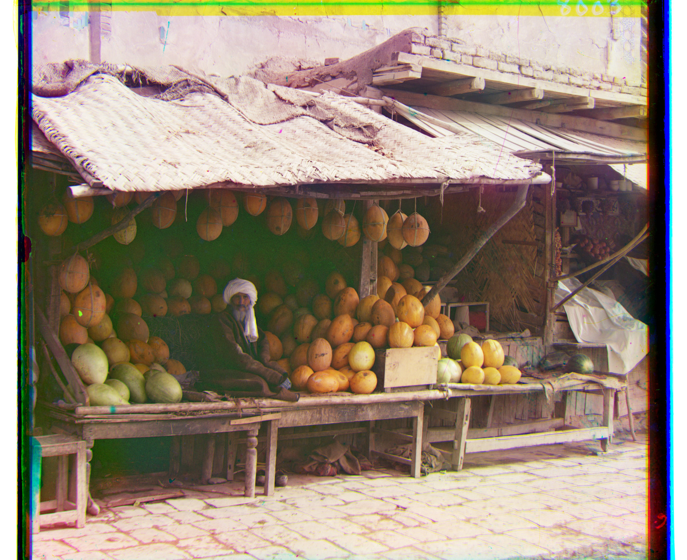
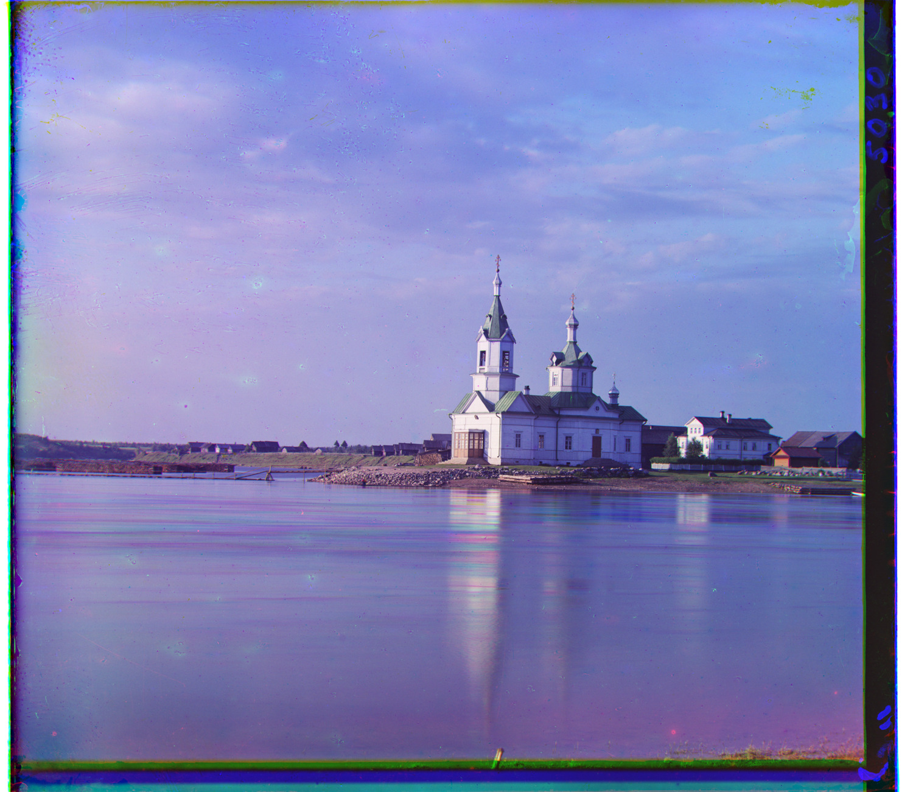
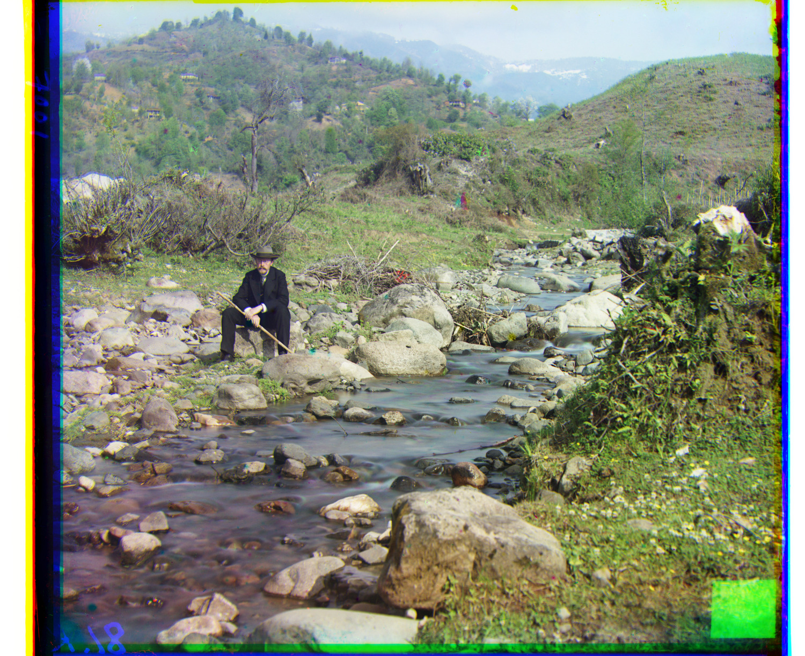
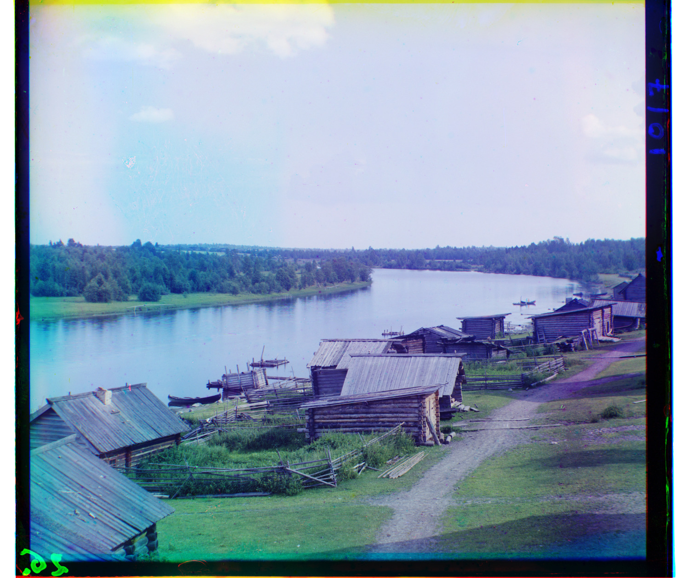

Cathedral


CS180 · Fall 2026 · Project 1
Offsets are applied to green and red relative to blue, in (x, y) pixels. Positive x moves right; positive y moves down.
NCC and L2 · search ±15 pixels · scoring border 15%


Raw-pixel NCC · coarsest side ≤200 pixels · coarse search ±15 · refinement ±2
| Scale | Channel size (w × h) | Search radius | Green (x, y) | Red (x, y) |
|---|---|---|---|---|
| 1/32 | 118 × 102 | ±15 | (0, 3) | (1, 6) |
| 1/16 | 236 × 203 | ±2 | (1, 5) | (1, 11) |
| 1/8 | 472 × 406 | ±2 | (1, 10) | (2, 22) |
| 1/4 | 943 × 811 | ±2 | (3, 21) | (3, 45) |
| 1/2 | 1885 × 1621 | ±2 | (5, 41) | (7, 89) |
| 1/1 | 3770 × 3241 | ±2 | (10, 81) | (14, 178) |


Raw-pixel NCC · All measured offsets (CSV)
G (2, 5) R (3, 12)

G (4, 25) R (-4, 58)

G (24, 49) R (-482, 400)

G (17, 60) R (14, 124)
G (17, 41) R (23, 89)
G (7, 40) R (11, 130)
G (10, 81) R (14, 178)

G (2, -3) R (2, 3)
G (3, 28) R (7, 68)

G (29, 79) R (37, 176)
G (-6, 49) R (-25, 96)
G (14, 52) R (11, 111)

G (3, 3) R (3, 6)
G (-7, 15) R (-16, 82)
Original Library of Congress TIFFs · raw-pixel NCC
Yusuf Hamadani mosque and mausoleum, ancient Merv, Turkmenistan · Original glass-plate TIFF
G (5, 32) R (8, 79)
Suna River at the village of Maloe Voronovo · Original glass-plate TIFF

G (-5, 25) R (-11, 102)
Locomotive and coal car at a railroad yard · Original glass-plate TIFF
G (31, 38) R (-165, 294)